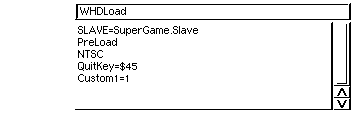

WHDLoad може бути запущений з командного рядка (CLI/Shell) або з Workbench. Параметри можуть задаватися у файлі глобальної конфігурації й через аргументи або Tooltypes. Як правило, необхідно використовувати параметр Slave. Інші параметри встановлюються в міру необхідності, залежно від вашої конфігурації системи й програми, що запускає з WHDLoad. Коли WHDLoad запущений з командного рядка, то при виході повертаються наступні коди:
Є локальні й глобальні опції. Локальні опції визначаються як аргументи через CLI або як ToolTypes, якщо запуск походить із Workbench.
Глобальний файл конфігурації перебуває в "S:WHDLoad.prefs".
Це звичайний ASCII файл, що містить по одному параметру в кожному рядку. Закоментовані
й порожні рядки ігноруються. Коментар - це частина рядка, починаючи зі знака ";" і до кінця поточного рядка.
Приклад файлу конфігурації знаходяться в пакеті WHDLoad ("S/WHDLoad.prefs").
| числовий: | ціле число; з CLI ви зобов'язані використовувати тільки десяткове значення, а при використанні в ToolType, допускається також використовувати 16-річне значення, яке повинне починатися зі знака - " $" |
| рядок: | строковий вираз |
| перемикач: | опція буде активна, якщо вона буде визначена (boolean) |
The column Local shows if the option can be used on the commandline and as tooltype in the icon. The column Global shows if the option can be used in the global configuration file.
Many options are not available in WHDLoadCD32. The column CD³² shows if the option is present in this special WHDLoad version.
| Назва опції | Тип | Локальный | Глобальный | CD³² | Значення за замовчуванням |
|---|---|---|---|---|---|
| BranchCache | перемикач | x | - | - | |
| ButtonWait | перемикач | x | x | x | |
| Cache | перемикач | x | - | x | |
| Chk | перемикач | x | - | - | |
| ChkBltHog | перемикач | x | - | - | |
| ChkBltSize | перемикач | x | - | - | |
| ChkBltWait | перемикач | x | - | - | |
| ChkColBst | перемикач | x | - | - | |
| ChkCopCon | перемикач | x | - | - | |
| ChkInts | перемикач | x | - | - | |
| ChipNoCache | перемикач | x | x | - | |
| Config | перемикач | x | - | x | "" |
| ConfigDelay | число | x | x | x | 400 |
| CoreDump | перемикач | x | - | - | |
| CoreDumpPath | рядок | - | x | - | PROGDIR: |
| Custom | рядок | x | - | x | "" |
| Custom1 | число | x | - | x | 0 |
| Custom2 | число | x | - | x | 0 |
| Custom3 | число | x | - | x | 0 |
| Custom4 | число | x | - | x | 0 |
| Custom5 | число | x | - | x | 0 |
| D | перемикач | x | - | - | |
| Data | рядок | x | - | x | - |
| DebugKey | число | x | x | - | $78 (CAA) |
| DCache | перемикач | x | - | - | |
| ExecuteCleanup | рядок | x | x | - | - |
| ExecuteStartup | рядок | x | x | - | - |
| Expert | перемикач | - | x | - | |
| ExpChip | перемикач | x | - | - | |
| ExpLocal | перемикач | x | - | - | |
| Exp24Bit | перемикач | x | - | - | |
| FileLog | перемикач | x | - | - | |
| FreezeKey | число | x | x | - | $78 (CAA) |
| MMU | перемикач | x | x | - | |
| NoAutoVec | перемикач | x | x | x | |
| NoCache | перемикач | x | - | x | |
| NoFileCache | перемикач | x | - | x | |
| NoFilter | перемикач | x | x | x | |
| NoMemReverse | перемикач | - | x | - | |
| NoFlushMem | перемикач | x | x | - | |
| NoMMU | перемикач | x | x | - | |
| NoResInt | перемикач | x | - | x | |
| NoReq | перемикач | x | x | x | |
| NoTrapHandler | перемикач | x | - | x | |
| NoVBRMove | перемикач | x | - | x | |
| NoWriteCache | перемикач | x | x | - | |
| NTSC | перемикач | x | x | x | |
| PAL | перемикач | x | x | x | |
| Preload | перемикач | x | x | x | |
| PreloadSize | число | x | - | - | |
| QuitKey | число | x | x | x | $59 (F10) |
| ReadDelay | число | - | x | x | 0 |
| RestartKey | число | x | x | x | $78 (CAA) |
| ShowRegs | рядок | - | x | - | SYS:Utilities/MultiView |
| Slave | рядок | x | - | x | WHDLoad.Slave |
| Snoop | перемикач | x | - | - | |
| SnoopAGA | перемикач | x | - | - | |
| SnoopECS | перемикач | x | - | - | |
| SnoopOCS | перемикач | x | - | - | |
| SplashDelay | число | x | x | x | 200 |
| StoreBuffer | перемикач | x | - | - | |
| SuperScalar | перемикач | x | - | - | |
| TimeOut | число | x | - | x | 0 |
| WriteDelay | число | x | x | - | 150 |
| Workbench: |  |
| CLI или Shell: | 1> WHDLoad SuperGame.slave Preload NTSC QuitKey=69 Custom1=1 |
Цей параметр не використовується безпосередньо програмою WHDLoad, але може бути перевірений slave-модулем. Призначення цього параметра полягає в тому, що якщо він визначений, то встановлена програма чекає натискання кнопки, у той час, як демонструється якась графіка й/або відтворюється музика (звичайно робить це протягом дуже обмеженого проміжку часу через довге завантаження з жорсткого диска / оперативної пам'яті, порівнянно зі швидкістю завантаження з дискети).
Включає кеш розгалуження (Branch Cache) на процесорах 68060. На інших типах процесорів це не має ніякого ефекту.
Також цей параметр не має ніякого ефекту, якщо використовується параметр NoCache/S.
Дозволяє включати й відключати використання кеша встановленою програмою. Якщо WHDLoad використовує диспетчер пам'яті,
то Chip-пам'ять позначається як такий, що кешується Writethrough (неточно).
Цей параметр не має ніякого ефекту, якщо також використовується параметр NoCache/S.
Цей параметр є швидким способом активації інших параметрів - ChkBltSize/S, ChkBltWait/S й ChkColBst/S.
Включає постійну перевірку виставлений чи ні біт blthog (bltpri)
у регістрі custom.dmacon. Може
використовуватися тільки разом з одним з
параметрів SnoopOCS / SnoopECS / SnoopAGA.
Включає перевірку правильно чи ні встановлена програма використовує блітер, щоб тільки дійсні області пам'яті використовувалися для роботи блітера. Може використовуватися тільки разом з одним з параметрів SnoopOCS / SnoopECS / SnoopAGA.
Включає перевірку правильно чи ні встановлена програма очікує завершення роботи блітера перед новим запуском блітера. Може використовуватися тільки разом з одним із параметрів SnoopOCS / SnoopECS / SnoopAGA.
Включає постійну перевірку чи встановлено біт
кольоровості (color) у регістрі custom.bplcon0.
Може використовуватися тільки разом з одним з
параметрів SnoopOCS / SnoopECS / SnoopAGA.
Включає перевірку того, що встановлена
програма не включає доступ копера до регістрів
DMA через зміну установок custom.copcon.
Може використовуватися тільки разом з одним з
параметрів SnoopOCS / SnoopECS / SnoopAGA.
Цей параметр перевіряє при кожному перериванні
чи встановлені для нього відповідно пари біт
в intreq й intena. Якщо
ні, то встановлена програма закінчить роботу
с відповідним повідомленням про помилку. Ця
можливість дозволяє легко виявляти
можливі проблеми з перериваннями на швидких
машинах (68040/060) або несправних апаратних
засобах, які створюють небажані
переривання. Існування цього параметру необхідно у зв'язку з тим,
що умова може виникнути якщо переривання
відключені установками intena у той
самий час, коли відбувається переривання.
Виключає кеширування Chip-пам'яті (BaseMem). Ця опція може використовуватися на апаратних засобах, які не дозволяють кешування Chip-пам'яті (наприклад, плата Blizzard PPC), щоб уникнути уповільнення швидкості виконання встановленої програми. Див. також "Робота з кешем центрального процесора".
Використовуючи цю опцію, можете зазначити, які елементи конфігурації будуть відображатися у вікні запуску. Ця опція буде перезаписувати ws_config, зазначений в Slave. Для
використання перевірки синтаксису, дивитьсяws_config у
autodocs.
Якщо немає ні ws_config у
Slave, ні Config/К і Slave перевіряє Custom1-5/K/N/ButtonWait/S пункти
через resload_Control функції та якщо починати з Workbench, WHDLoad додадає Config/K опцію до значока(icon).
Тип елементів буде походити від фактичного значення Custom1-5/K/N параметру (0-1 boolean, 2-63 list, >63 binary).
Якщо цей параметр установлений, то при кожному виході з установленої програми, WHDLoad створює файл дампа пам'яті. Це може бути корисно для налагоджувальних цілей або, наприклад, для того щоб витягти музику в MOD-форматі із цього файлу з дампом пам'яті.
Визначає місце збереження файлів дампа пам'яті, створених програмою WHDLoad.
Цей параметр безпосередньо програмою WHDLoad не використовувається, але може бути перевірений slave-модулем для керування специфічними можливостями встановленої програми. Custom/K може містити строкову змінну, а Custom1-5/K може містити тільки ціле число. За конкретною інформацією щодо можливого використання даних параметрів, звертайтеся до документації конкретно встановленої програми.
Цей параметр дуже корисний для налагодження. Якщо він установлений і програмний системний монітор, який підтримується (HRT/TK), знайдений у пам'яті, то WHDLoad емулює незамасковане переривання (NMI) перед виконанням першої інструкції процесора, яка перебувала в Slave-модулі.
Використовуючи цей параметр можна задати шлях до каталогу, у який WHDLoad повинен перейти для завантаження даних установленої програми. Цей параметр перезаписує змінну ws_CurrentDir, яка перебуває в Slave-модулі.
Дозволяє включати кеш даних і кеш інструкцій
для встановленої програми. Якщо WHDLoad
використовує MMU, то Chip-пам'ять позначається як
такий, що кешується Writethrough (неточно).
Цей параметр не має ніякого ефекту, якщо
також використовувається параметр NoCache/S.
Задає код клавіші rawkey щоб зупинити програму налагодження (створюються файли дампа пам'яті). Параметр працює тільки за умов активності режимів Expert й VBR (Vector Base Register) переміщений програмою WHDLoad (параметр NoVBRMove/S НЕ установлено, а процесор не нижче 68010) або якщо slave-модуль підтримує це самостійно.
За допомогою даного параметра можна задати команду, яка буде виконана перед завершенням роботи WHDLoad.
За допомогою даного параметра можна визначети команду, яка буде виконана при запуску WHDLoad. Може використовуватися для відключення тих апаратних засобів або програм, які можуть конфліктувати із програмою WHDLoad, або для зупинки стека TCP/IP та інших програм
Включає режим експерта при використанні WHDLoad. Даний параметр впливає на параметр DebugKey/S і виведення попереджень під час перемикання між установленою програмою й OS (color cycle copper screens - коли екран розділений на 3 горизонтальних прямокутники, середній з яких постійно міняє кольори, використовуючи всю доступну палітру). Якщо режим експерта НЕ активний, то параметр DebugKey/S теж буде недоступний. В режимі експерта в деяких вікнах з повідомленнями про помилки з'являється додаткова кнопка. Ця кнопка називається Show Regs. Вона дозволяє переглядати регістри й інформацію про статуси, подібно тому, як пишеться в дамп регістрів. Крім того, для того щоб переключати опції які належать до налагодження, деякі кнопки додані до стартового вікна. Змінені опції зберегаються до значка(icon) на робочому столі.
Якщо встановлена програма використовує
додаткову пам'ять (ws_ExpMem), то ці параметри можуть
бути використані для того, щоб змусити WHDLoad
резервувати цю пам'ять відповідно у Chip-пам'яті,
Local-пам'яті або 24BitDma-пам'яті. У результаті це може
привести до зниження швидкості виконання програми,
оскільки доступ центрального процесора до цієї
пам'яті може бути повільнішим в порівнянні
зі швидкісттю доступу до Fast-пам'яті, яка використовується за
замовчуванням. Ви можете використовувати сторонні
утиліти (наприклад, SysInfo, GvpInfo,...) щоб довідатися про
конфігурацію вашої пам'яті, а також якими
характеристиками володіє кожен тип пам'яті
В загалі, цій опції призначені для рішення
проблем сумісності встановлених програм на
швидких машинах, сповільнюючи їхнє виконання за рахунок
використання повільної пам'яті.
Цей параметр служить тільки для проведення налагоджувальних
робіт.
За детальною інформацією звертайтеся до розділу "Дампи пам'яті й файли журналів
реєстрації".
Якщо Ви використовуєте один з програмних системних моніторів, що підтримуються (HRTmon або Thrillkill), Ви можете використати цей параметр для призначення коду клавіші rawkey, при натисканні на яку, WHDLOAD переключиться в системний монітор. Працює тільки тоді, якщо VBR переміщений програмою WHDLoad (НЕ повинен бути активний параметр NoVBRMove/S і центральний процесор повинен бути не менш 68010), а системний монітор повинен бути запущений. За додатковою інформацією звертайтеся до розділу Системні монітори / Відладчики.
Цей параметр повинен використовуватися тільки на процесорах 68030, для того, щоб дозволити їм використовувати можливості MMU (захист пам'яті, удосконалена опція управління кешем, Snooping, resload_Protect *?). На процесорах 68040/060 ця опція не має ніякого ефекту, тому що диспетчер пам'яті і так буде використовуватися за замовчуванням. Рекомендується встановлювати цей параметр у глобальному файлі конфігурації на всіх системах, що мають CPU 68030 c MMU (тобто не 68EC030), тому що це значно збільшує стабільність і безпеку системи. Цей параметр не має ніякого ефекту, якщо використовувається параметр NoMMU/S.
Якщо встановлено цей параметр, то WHDLoad не буде виходити, якщо раптово виникне автовекторне переривання або немасковане переривання (NMI) (вектори #25-31 / $64-$7c). Цей параметр може використовуватися для запобігання виходу програми WHDLoad на системах, які створюють випадкові переривання (хоча, краще просто видалити із системи "глючне залізо").
Якщо цей параметр ВКЛЮЧЕНИЙ, то всі кеші
будуть ВИКЛЮЧЕНІ.
Цей параметр анулює наступні параметри: BranchCache/S, Cache/S, DCache/S,
StoreBuffer/S й SuperScalar/S.
Відключає кешування файлів в WHDLoad і змушує
його звертатися до OS для кожної дискової операції,
установленої програми
Цей параметр відключає параметр Preload/S.
Відключає звуковий фільтр. Зверніть увагу, що цей параметр стосується ініціалізації фільтра тільки при запуску, так що ця функція неспроможна, якщо встановлена програма сама маніпулює станом звукового фільтра.
Як правило WHDLoad очищує пам'ять при запуску, щоб одержати як можна більше вільної пам'яті для опції Preload/S, тобто з пам'яті видаляються всі незадіяні ресурси системи, такі як бібліотеки, шрифти й т.д. При використанні ж цього параметра, WHDLoad не буде очищувати пам'ять. Може використатися на системах з більшою кількістю вільної пам'яті, щоб уникнути повторного завантаження резидентних ресурсів і поліпшення працездатності системи.
Якщо активовано дану опцію, WHDLoad не стане виділяти пам'ять, використовуючи прапорець MEM_REVERSE. Надходила інформація, що використання даного прапорця приводить до проблем на деяких конфігураціях (використовующих швидку пам'ять (fast memory) у слоті PCMCIA на A600/A1200, а також на комп'ютерах з конфігурацією M-Tec 1230/8 MB OS3.0). Причина цього поки незрозуміла. Ця опція також може допомогти у випадку, якщо зіпсовано якусь частину верхньої пам'яті, тому що WHDLoad буде в першу чергу використовувати пам'ять із нижнього адресного простору. У випадку, якщо у вас виникають незрозумілі помилки, варто спробувати цю опцію. Ця опція з'явилася в WHDLoad версії 16.8.
Якщо цей параметр установлений, WHDLOAD не буде використати диспетчер пам'яті. Це - критична і небезпечна опція, рекомендована тільки для тестування або налагодження, а не для нормального використання. За додатковою інформацією звертайтеся до розділу WHDLoad й диспетчер пам'яті (MMU). Цей параметр пригнічує MMU/S.
Може використовуватися тільки якщо WHDLoad був запущений з командного рядка (CLI/Shell). При запуску з Workbench, ця опція не має ніякого ефекту. Даний параметр відключає в WHDLoad виведення повідомлень у нове окреме вікно, а повідомлення будуть виводитися в тому же командному вікні, звідки був запущений WHDLoad.
Якщо цей параметр установленно, то WHDLoad буде використовувати оригінальну таблицю векторів таблицю з OS, яка активна при старті WHDLoad. При запуску, WHDLoad копіює таблицю векторів системи замість того, щоб створити свою власну. Це буває корисно для налагоджувальних цілей, але не для нормальної роботи. Попередження: якщо обробник виняткових ситуацій, який викликається через оригінальну таблицю векторів, спробує викликати будь-яку функцію OS або спробує використати структури даних OS, то це приведе до краху системи (наприклад, exec.Alert).
За замовчуванням WHDLoad переміщає таблицю векторів в іншу область пам'яті, починаючи з $0, використовуючи VBR (Vector base Register). Перевага цього в тім, що встановлена програма, не може змінити таблицю векторів, що набагато збільшує безпеку й стабільність програми WHDLoad. Деякі встановлені програми / slave-модулі не будуть правильно працювати з переміщеним VBR. Причина цього полягає в тому, що встановлена програма може зробити обіг, що не підтримується переміщеним VBR, або автор патча був занадто тупим, щоб включити підтримку переміщеного VBR. У такому випадку, ця опція повинна бути активована, щоб перешкоджати WHDLoad переміщати VBR. Інша можливість переміщеного VBR це те, що WHDLoad може перевірити клавіатуру щораз, коли відбувається автовекторное переривання. Роблячи таку перевірку, WHDLoad здатний завершити встановлену програму, незалежно від її роботи або роботи slave-модуля, якщо були натиснуті QuitKey/S або DebugKey/S (також установлена програма може бути перервана, коли натиснута FreezeKey/S). Для можливості переміщення VBR потрібен процесор не нижче 68010. На процесорі 68000 ця опція не має ніякого ефекту, тому що VBR - завжди перебуває в $0 і не може бути переміщений.
Відключає для WHDLoad можливість кешування диска для операцій запису. Без цього параметра WHDLoad буде сам намагатися кешувати у пам'яті всі операції запису й відкладати запис до виходу із програми, щоб уникнути непотрібних звернень до операційної системи.
Якщо обрано цей параметр, то WHDLoad для
установленої програми буде використати
режим NTSC (60Hz). На PAL-версії Амігі, драйвер NTSC-монітора
повинен бути встановлений в "DEVS:Monitors/".
Якщо обрано цей параметр, то WHDLoad для
установленої програми буде використати
режим PAL (50Hz). На NTSC-версії Амігі, драйвер PAL-монітора
повинен бути встановлений в "DEVS:Monitors/".
Якщо цей параметр включений, то WHDLoad завантажить в пам'ять стільки файлів й образів дискет, скільки можливо (залежно від того, скільки пам'яті було вільно при запуску). Це збільшує швидкість виконання завантаження/підгрузки файлів установленої програми, тому що дозволяє уникати звернень до OS, для завантаження даних безпосередньо з жорсткого диска. Цей параметр бажано завжди встановлювати
Призначає код клавіші rawkey, при натисканні на яку відбудеться вихід із програми. Працює, якщо тільки VBR переміщений програмою WHDLoad (НЕ повинен бути активний параметр NoVBRMove/S, а центральний процесор повинен бути не менш 68010) і сам slave-модуль повинен це підтримувати.
Установлює, у значеннях рівних 1/50-й частині секунди, скільки часу WHDLoad повинен чекати після того, як він завантажив дані з дисків, а також після того, як була завершена підгрузка. Це вирішує проблеми з такими приводами (наприклад, приводи CD-ROM), які ще щось виконують після читання (наприклад, виключають двигун).
Використовуючи цей параметр, Ви можете призначати rawkey код клавіші, при натисканні на яку, WHDLoad запустить знову встановлену програму.
Цей параметр корисний тільки разом з
параметром Expert/S.
За допомогою цього параметра можна задати в якому
виді WHDLoad буде показувати дамп стану
регістрів, якщо буде натиснута кнопка Show Regs в
вікні повідомлення про помилку WHDLoad. WHDLoad буде
додавати, до зазначеного командного рядка, ім'я
тимчасово збереженого файлу (у цей час T:.whdl_register).
Ім'я slave-модуля, що буде використатися програмою WHDLoad. Slave-модуль містить код інтерфейсу, необхідний для зв'язку між установленою програмою й WHDLoad.
Ці параметри активують можливості Cia/Custom register snoop ВWHDLoad.
Установлює, у значеннях рівних 1/50-й частині
секунди, скільки часу при запуску WHDLoad буде
показувати інформаційне вікно. Якщо SplashDelay/K/N
менше ніж ReadDelay/K/N, то цей параметр
ігнорується, і вікно показується стільки,
скільки зазначено в ReadDelay/K/N. Вікно
показується, принаймні, протягом часу
роботи функції Preload/S.
Якщо параметр не встановлений або має значення
рівне 0, то ніяких вікон виводитися не буде.
Якщо
опція встановлена на -1, кнопка Пуск буде додана до вікна і вона залишається там
доки ця кнопка буде натиснута. Стартове вікно також може бути закрито
натисканням кнопками Space, Return або Enter. Якщо натиснута кнопка Esc WHDLoad зупиниться Preload/S і негайно буде закрита. Також дивіться ConfigDelay/K/N.
Дозволяє активувати Store Buffer на процесорах
68060. На інших процесорах цей параметр не має
ніякого ефекту
Також не має ніякого ефекту, якщо встановлено
параметр NoCache/S.
Дозволяє на процесорах 68060 виконувати
безліч інструкцій за один машинний цикл. На
інших процесорах цей параметр не має
ніякого ефекту
Також не має ніякого ефекту, якщо встановлено
параметр NoCache/S.
Якщо цей параметр установлений, то це дозволяє
WHDLoad і встановленій програмі завершувати свою
роботу через певний час. Потрібно,
щоб параметр NoVBRMove/S НЕ був
установлений й щоб установлена програма не
змінювала таймер ciaa.ciatod. Час
роботи до виходу встановлюється, у значеннях
рівних 1/50-й частини секунди. Для виміру часу
роботи демо або гри потрібно активувати
параметр Expert/S і задати параметр DebugKey/K/N, і в момент, коли ви захочете
вийти, натисніть гарячу клавішу (DebugKey). Після цього
загляньте в створений файл .whdl_registers,
і подивіться значення ciaa-event. Якщо
частота мережі живлення - 50 Гц, то це буде саме
те значення, яке Ви повинні встановити з TimeOut/K/N,
якщо ж частота - 60 Гц, то варто помножити це
значення на 5/6.
Параметр часу очікування після запису на диск визначає у значеннях рівних 1/50-й частини секунди, час, який WHDLoad буде очікувати після запису чого-небудь на диск. Цей параметр стосується функції resload_Save *? і можливості FileLog/S. Ця функція має сенс, тому що файлові системи звичайно не можуть моментально записати дані на диск. Це займає якийсь час (1.. 3 секунди) поки всі структури файловой системи будуть успішно обновлені. Значення за замовчуванням для функції WriteDelay становить 150, що дозволяє WHDLoad чекати 3 секунди після того, як дані запишуться на жорсткий диск. Ви можете змінити значення на 0, але тоді Ви ніколи не повинні виходити з установленої програми по RESET'у відразу після запису, тому що дані не будуть правильно записані на диск.